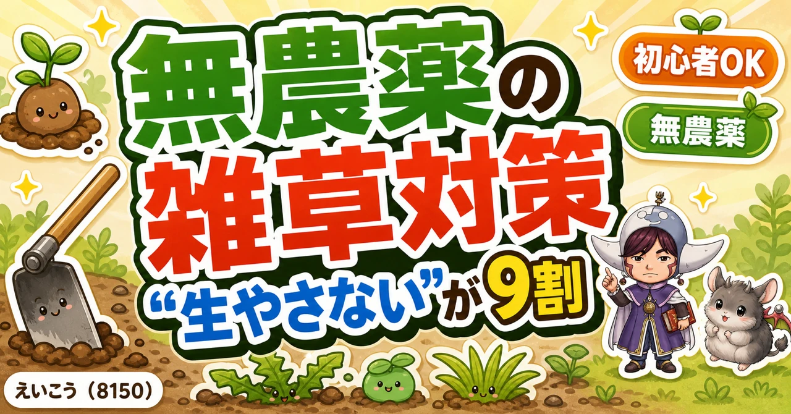
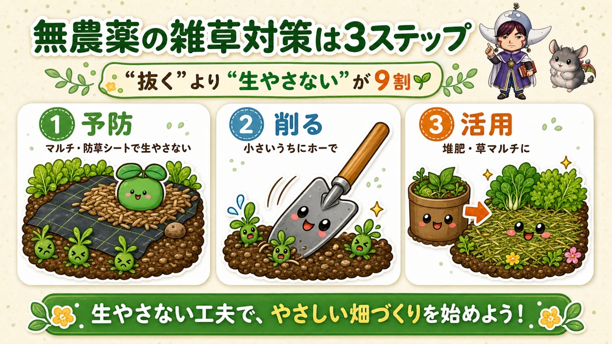
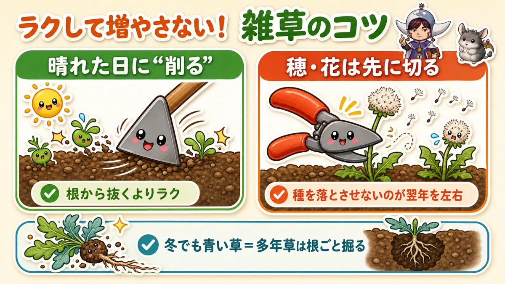
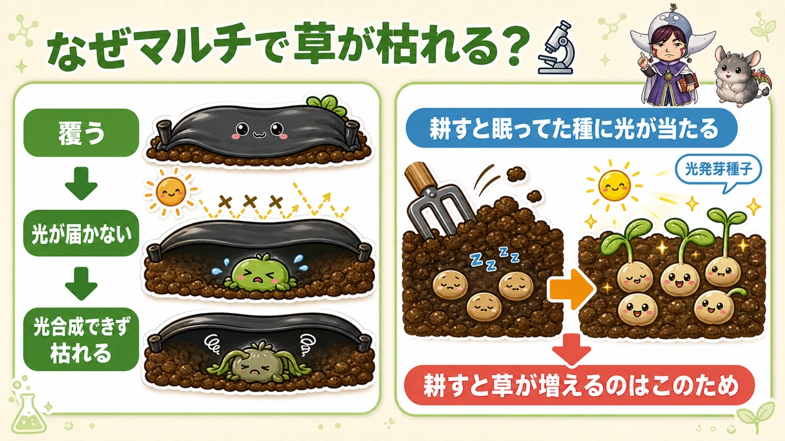

【保存版】抜いても生えてくる…無農薬の雑草対策🌱「生やさない」が9割

🗨️「雑草、抜いても抜いてもキリがない…」
🗨️「無農薬だと除草剤も使えへんし、どうすれば？」
🗨️「気づいたら畑が草ぼうぼう…もう無理かも」
どうも、8150（えいこう）です🌱 家庭菜園歴8年、有機・無農薬でやってる、野菜と理科が好きな人間です。
今日は「雑草対策」。最初に正直なことを言いますね。雑草は、ゼロにはなりません。 私もプロの農家さんも、暑い年は「今年は負けたな…」って草に白旗あげること、あります(笑) だから完璧を目指さなくて大丈夫。大事なのは「抜く」より「生やさない」——ここが9割です。
この記事では、その考え方と、私が実際に使ってる道具の正直レビューをお話しします。
📖 この記事の目次
まず考え方：なんで雑草を放っちゃダメ？
ただの見た目の問題じゃないんです。
- 野菜と栄養・水・日光を奪い合う
- 虫の住みかになる（無農薬だとここが地味に痛い）
- 草ぼうぼうだと、見るのも嫌になって、畑から足が遠のく…という負のループ
逆に言うと、雑草を抑えられれば虫も減って、無農薬がぐっとラクになる。だから雑草対策は、無農薬の土台でもあります。
①最強は「予防」：マルチ・防草シートで生やさない
いちばん効くのは、そもそも生えさせないこと。地面に光が届かなければ、草は生えられません（理由はあとで理科の話で）。

マルチ（黒マルチ）…畝を覆って雑草を防ぐ。泥はね防止（＝病気予防）や乾燥防止にもなって一石三鳥。
防草シート…通路や広めの場所に。一度敷くと数年もちます。
正直レビュー：防草シートは「耐久年数」で選ぶ
元・園芸店員の知識からひとつ。防草シートは値段でピンキリで、4年・8年・10年耐久があります。安いものはススキ・チガヤ・スギナみたいな強い草に貫通されて、結局やり直しに。しつこい草が出る場所は、ちょっと高くても織り目が詰まった丈夫なやつが結局おトクです。水はちゃんと通すので、水たまりの心配はいりません。
⚠️ ひとつ失敗あるある。強風でめくれます。 私も「2人がかりで敷いたのに翌日バサーッ…」と虚無になったことが😇 ピンは返し付きの長いやつを使って、ふちにはレンガを置く。フカフカの土ほどめくれやすいので、ここは念入りに。


②生えたら「小さいうちに削る」＋「種を落とさせない」
予防しても、隙間からは生えてきます。そこで2つ。

ホーで“削る”
根っこから抜くより、ホー（三角ホーやねじり鎌）で地面の表面をサッと削るほうが、何倍もラクです。列の間や株のまわりをシャッシャッと。コツは晴れた日にやること。削った草が日に焼けて、そのまま枯れてくれます。私は取っ手の長い三角ホーを立ったまま使ってます。しゃがまなくていいので腰がラク。無農薬勢の必需品です。

種を落とさせない
これ、来年の自分への最大のプレゼントです。雑草は種を落とすと翌年どっと増える。だから、抜くのが追いつかない時は、せめて穂や花がついた所だけ、枝切りばさみでチョキン。これだけでも全然違います。

しつこいのは見分ける
冬でも青々してる草（タンポポなど）は多年草。上だけ切っても根から再生するので、根ごと深く掘ります。逆に一年草は、種さえ落とさせなければOK。
③抜いた草は、捨てずにお宝に
抜いた草、そのままゴミにしたらもったいない。米ぬかと一緒に土に埋めれば堆肥になるし、乾かして株元に敷けば草マルチ（次の雑草も抑える）。前回の土づくりの話とつながりますね🌱
プランターの人は、安心してください
「うち、プランターやけど…」と思った方、大丈夫。プランターは培養土なので、雑草はほぼ生えません。たまに飛んできた種が芽を出す程度。見つけたら抜くだけでOKです。雑草でガチで悩むのは、主に庭や畑の人の話です。
おうち理科：なぜマルチで草が枯れるの？🔬
ここで理科の小ネタを。「なんでシートやマルチで覆うと草が枯れるの？」——答えは、光が当たらないと光合成ができないから。植物は光でエネルギーを作るので、光を断たれると生きていけないんです。

もうひとつ面白いのが、多くの雑草の種は「光が当たると発芽する」という性質（光発芽種子といいます）。だから——土を耕すと、眠ってた種に光が当たって、一斉に芽を出す。「耕したらかえって草が増えた！」の正体はこれ。逆に、光を遮れば種は眠ったまま。雑草の種は土の中で何年も眠れるので、シートを外すとまた生えてくる、というわけ。
知ってると、対策の意味がストンと腑に落ちますよね☺️ お子さんと「なんで〜？」って話すと盛り上がりますよ。
私の失敗談：草に負けた夏
えらそうに言ってる私も、やらかしてます。ある猛暑の年、暑さで草の勢いが全然止まらなくて、気づけば畑が草の海。「もう無理…」と一回心が折れました😇
でもね、そこで諦めずに黒マルチと防草シートで仕切り直したら、ちゃんと立て直せました。負けた年があっても大丈夫。やめずに手を打てば、畑は戻ってきます。
まとめ
- 「抜く」より「生やさない」。マルチ・防草シートで予防が9割
- 生えたら小さいうちにホーで削る＋種を落とさせない
- 抜いた草は堆肥・草マルチでお宝に
- プランター勢は雑草ほぼ無し。安心を🌱
雑草と全面戦争しなくていいんです。ほどほどに、こまめに。それで畑はちゃんと回ります。